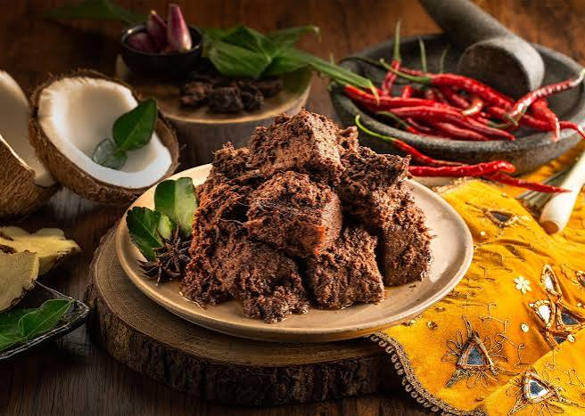
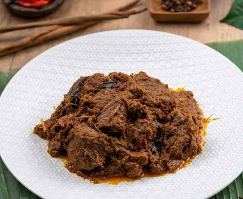

Rendang berasal dari Minangkabau, Sumatera Barat yang sudah dikenal sejak abad ke-16 sebagai bekal tahan lama untuk orang-orang perantau yang melakukan perjalanan menggunakan kapal laut. Rendang sendiri berasal dari kata "Marandang", yaitu proses memasak santan dan bumbu dalam waktu yang lama hingga kering dan menyusut. Bagi masyarakat Minangkabau, rendang memiliki filosofi, yaitu musyawarah dan mufakat.
Rendang umumnya berwarna hitam pekat.
Jika daging yang dimasak masih berwarna merah kecokelatan dan dimasak tidak sampai kering, masyarakat Minangkabau menyebutnya "Kalio".
Rendang menggunakan rempah-rempah, yaitu bumbu halus (bawang, cabai merah, jahe, kunyit, lengkuas, ketumbar), rempah aromatik (serai, daun salam, daun jeruk, daun kunyit).
Jenis rendang 1
Jenis rendang 2
Jenis rendang 3
Jenis rendang 4
Jenis rendang 5